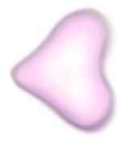
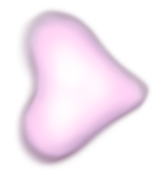

Becoming digitális szabadságharcos (becoming digital freedom fighter) is a game, a nonlinear journey speculating on posthungarian futures. Referencing Béla Bartók's A kékszakállú herceg vára (Prince Bluebeard's Castle), the hero of the story goes into a castle where seven rooms embody different time/spaces and levels of the digital freedom fighter's psyche. National identity and (anti-)memory are deconstructed and distorted into interdimensional blocs of becoming. Reappropriated folk symbols, hyper-folk melodies, Facebook groups and girly games merge into disrupting fascist mythology and the fantasy of a sovereign hungariarian identity.


interactive fiction
becoming digitális szabadságharcos